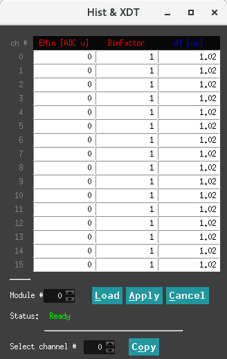

Debug¶
本下拉栏中调节内容为监视波形噪声水平、基线分布等。
Hist & XDT¶
控制界面¶
Binning factor 控制能谱中 MCA bin 的数量。能量计算为 16 位数字，原则上允许 64K MCA bin。
但是，每个通道的能谱内存限制在 32K 的 bin 数，因此在构建柱状图之前，计算的能量值除以系数 \(2^{binning factor}\) 。Binning factor 通常设置为 1，但对于低计数率和宽峰值，将其设置为较大的值可能会有用，以获得具有较少 bin 数但每个 bin 中更多的计数。
\(E_{min}\) 是为将来的函数预留的，用于在能谱填充之前从计算的能量值中减去一个常数“最小能量”，从而基本上切断能谱的低道址部分。